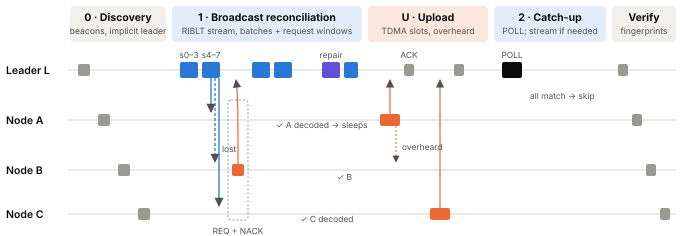
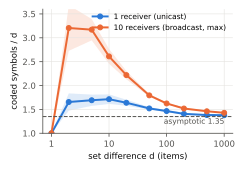
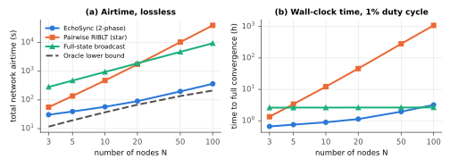
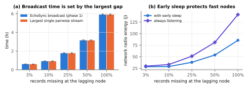
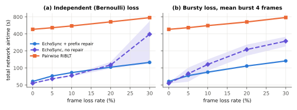

Edge devices that operate without stable internet, such as field sensors, disaster-response kits and rural community networks, often need to agree on a shared dataset: a log of readings, a message board, a list of alerts. Conventional synchronization uses either pairwise sessions or network-wide flooding. On LoRa physical layers both are expensive. Every transmission spends scarce airtime, and European regulations cap each device at 1% of the time in the common 868 MHz sub-band [14, 21]. Pairwise synchronization needs a number of sessions that grows linearly with the number of nodes, and flooding repeats data that most receivers already hold.
EchoSync replaces many sessions with one broadcast. An elected sender streams rateless coded symbols derived from Rateless Invertible Bloom Lookup Tables (RIBLT) [1]. Because the coded symbols are linear in the sender's set, each receiver subtracts its own local symbols and decodes its own difference from the same stream, however far behind it is. The original proposal described this idea and an evaluation plan. This paper implements and evaluates it, and reports what the evaluation changed.
LoRa uses chirp spread spectrum: a spreading factor SF ∈ {7…12} trades data rate for range. The time on air of one frame with a payload of PL bytes, bandwidth BW, coding rate CR (1 = 4/5), an 8-symbol preamble and explicit header with CRC is [9]:
Tsym = 2SF/BW, T = (npre + 4.25)·Tsym + [8 + max(⌈(8PL − 4SF + 44)/(4(SF − 2DE))⌉·(CR + 4), 0)]·Tsym(1)
Here DE = 1 (low-data-rate optimization) when Tsym > 16 ms. A device that transmits for T seconds must stay silent for T(1/δ − 1) seconds, where δ is the duty-cycle limit (δ = 1% in the EU868 g1 sub-band). Table 1 shows the frame sizes and airtimes used in this study. The table makes the core constraint concrete: at SF9, one full frame costs 0.62 s of airtime and then 61 s of silence.
| SF | Max payload (B) | Symbols / frame | Symbol frame (B) | Airtime (ms) | Silence at 1% (s) | Records / data frame |
|---|---|---|---|---|---|---|
| 7 | 222 | 8 | 216 | 343.3 | 34.0 | 13 |
| 9 (default) | 115 | 4 | 112 | 615.4 | 60.9 | 6 |
| 12 | 51 | 1 | 34 | 1810.4 | 179.2 | 2 |
Set reconciliation lets two parties learn the symmetric difference of their sets, of size d, using communication proportional to d rather than to the set size [4]. Invertible Bloom Lookup Tables (IBLTs) [2, 3] achieve this with a table whose size must be chosen in advance from an estimate of d. RIBLT [1] removes the estimate. Each item maps to coded-symbol index 0 and then to a pseudo-random sequence of indices that grows sparser (the probability of mapping to index i is about 1/(1 + i/2)). The sender can therefore emit an endless stream, and the receiver stops as soon as peeling decoding succeeds. A coded symbol stores the XOR of the items, the XOR of their 64-bit hashes, and a signed count. Yang et al. report that the number of coded symbols needed approaches 1.35·d for large d, with a higher ratio for small d [1].
The property EchoSync relies on is linearity. A receiver that subtracts the symbols of its own set from the sender's symbols obtains exactly the coded symbols of the difference. One stream therefore serves receivers with completely different gaps, and the stream only needs to be as long as the largest gap requires.
EchoSync synchronizes a grow-only set of immutable operations. Merging two such sets by union is commutative, associative and idempotent, so any state-based CRDT [5] defined as a deterministic fold over the operation set converges once the sets are equal. In our evaluation the fold is a last-writer-wins map ordered by Lamport timestamp [17] and then node id.
Gossip and tree dissemination in wireless sensor networks, notably Trickle [6], suppress redundant transmissions by listening before speaking. They detect inconsistency cheaply, but they still ship data per item and per neighbor. Digital-fountain approaches [7, 8] showed that rateless codes make one broadcast useful to receivers with different losses. EchoSync applies the same idea to receivers with different data. Vector clocks and Merkle-tree anti-entropy are standard in distributed databases, but they need several round trips, which costs minutes per exchange under a 1% duty cycle. Studies of LoRa capacity [11–13] show that collisions and duty cycle, not bit rate, are the limiting factors at scale. That motivates minimizing the number of transmissions rather than their size. Rateless reconciliation has been adopted for local-first collaboration software [18, 20], but it has not been evaluated on ultra-constrained broadcast media.
Deploying broadcast set reconciliation on LoRa raises four problems: (1) receivers with very different state gaps; (2) frame loss on fading channels, which causes local decoding failures; (3) convergence verification without acknowledgment storms; and (4) collisions among control and request frames. Section 5 addresses each one.
RQ1. Does broadcasting rateless coded symbols reduce total network airtime compared with sequential pairwise synchronization as node density varies?
RQ2. How do heterogeneous state gaps among receivers affect broadcast duration and airtime efficiency?
RQ3. Can EchoSync converge robustly under 10–30% packet loss without excessive control overhead?
The hypotheses are kept exactly as originally stated. Because some of them were ambiguous, we fixed operational definitions before running the final experiments:

Each record (CRDT operation) is a fixed 16-byte item, so a coded symbol carries the record itself in its sum field and no separate data-transfer round is needed. A coded symbol is 26 bytes on air: a 16 B sum, an 8 B checksum, and a 2 B count stored mod 216, which is enough to recognize ±1. Table 2 lists the frame formats.
| Frame | Size | Contents |
|---|---|---|
| BEACON | 20 | header, set size (4), 64-bit state fingerprint (XOR of record hashes) |
| SYMBOLS | 8 + 26K | K consecutive coded symbols (K = 8 / 4 / 1 at SF7 / 9 / 12) |
| REQ (+NACK) | 8 (+8) | "need more symbols", plus a 64-bit bitmap of lost frames among the first 64 |
| DATA / ACK | 8 + 16r / 9 | r packed records / 8-bit bitmap of received frames in a burst |
| POLL | 20 | union size and fingerprint after the upload phase |
Every node sends one beacon. The leader is chosen deterministically from what every node has already heard: the largest set, with ties broken by the lowest id. No election messages, rounds or votes are needed. If all fingerprints match, nothing is sent. Beacons are periodic in deployment; the simulator assumes the roster is complete, which is a stated limitation (Section 9).
The leader streams symbol frames in batches of B frames (default B = 2). The first batch is sized from the beacons' set-size gaps (⌈1.35·max|ΔSize|/K⌉ frames), which helps a node that joins late with an empty set. Each receiver feeds received symbols into a streaming peeling decoder. It recognizes completion by fingerprint verification: the XOR of the hashes of recovered items must equal fp(S) ⊕ fp(R), and the signed count must equal |S| − |R|. Both values come from beacons, so a receiver needs no "end" message and loses nothing if symbol 0 is dropped. A receiver that has decoded stops listening (early sleep).
After each batch the leader listens for a short window of four slots. Every receiver that has not decoded sends a REQ in a random slot. The leader only needs to detect activity, using LoRa Channel Activity Detection, so collisions never stop the stream; this solves the acknowledgment-storm problem by design. If no request is heard but a receiver is still behind, that receiver retries after 30 s, and the stream resumes from where it stopped. Because the code is rateless, no symbol is wasted.
Prefix repair. Early experiments showed a failure mode that the original proposal did not anticipate. RIBLT places every item in symbol 0 and concentrates mappings in the first indices. A receiver that loses those dense early frames must wait for the increasingly sparse later symbols, which happen to contain its remaining items only rarely. With 80 missing items and 20% frame loss, the median receiver needed 1.85·d symbols, but the 99th percentile needed 6.9·d and the worst case 427·d. We therefore extended REQ with a 64-bit NACK bitmap of lost frames among the first 64. A request that lands alone in its slot is decoded, and the leader retransmits the union of the reported frames before the next batch. Retransmissions help every lagging receiver at once. With repair, the same test had a 99th percentile of 1.9·d.
Decoding phase 1 tells each receiver exactly which of its records the leader lacks (the items with negative sign). In phase U, receivers upload those records in roster order, using reliable packed DATA frames with ACKs. Other receivers overhear the uploads and skip records they have already heard, so each record usually crosses the channel once. In phase 2, the leader sends a POLL with the union fingerprint. Nodes that missed some uploads request, and only they receive a catch-up stream; if nobody requests, phase 2 costs one frame. A final beacon round verifies that all fingerprints are equal.
We wrote a discrete-event simulator in Python (about 1,100 lines, five files; Appendix A). It contains:
Receivers spend RX energy only while they are expected to listen.
Nodes share a history of 1,000 records. Each node misses each historical record with probability 3% and holds 5–20 fresh records of its own, so a typical gap is d ≈ 85–100. Defaults: SF9, BW 125 kHz, CR 4/5, δ = 1%, K = 4, B = 2, 4 request slots, a 30 s recovery timeout and a 5 s unicast timeout. Each configuration was repeated with independent seeds: 20–30 seeds per point (8 at N ≥ 50, 100 for codec points with d ≤ 100). We report means with 95% confidence intervals (shaded bands and error bars in the figures).
Automated tests (test_sim.py, all passing) check the following:

Unicast overhead peaks at 1.71 for d = 10 and falls to 1.38 at d = 1,000, which reproduces [1]. A broadcast must wait for its slowest receiver, so its overhead is higher at small d (2.61 at d = 10) but within 10.8% of unicast at d = 100 and within 3.6% at d = 1,000 (Table 3). Measured against the information bound d, the overhead never comes within 15% (the minimum is 1.38). H2 is rejected in reading (i). In reading (ii) it is supported for d ≥ 100 but not for small differences.
| d | 10 | 20 | 50 | 100 | 200 | 500 | 1000 |
|---|---|---|---|---|---|---|---|
| Unicast (1 receiver) | 1.71 | 1.64 | 1.52 | 1.47 | 1.41 | 1.38 | 1.38 |
| Broadcast (10 receivers) | 2.61 | 2.22 | 1.79 | 1.63 | 1.52 | 1.46 | 1.43 |
| Broadcast vs unicast | +52% | +35% | +18% | +10.8% | +8.0% | +5.7% | +3.6% |

EchoSync's airtime grows slowly with N: a single stream is followed by uploads that are proportional to the number of new records. Pairwise airtime grows roughly quadratically: there are about 2N sessions, and the second-pass gaps themselves grow with N. EchoSync stays within 1.3–1.7× of the oracle lower bound for N ≥ 10 (2.6× at N = 3, where fixed costs such as beacons dominate). Full-state broadcast costs 9–26× more airtime than EchoSync. Its wall time looks short only because the idealized model lets 100 radios share their duty budgets perfectly with zero collisions, while keeping the channel 98% busy, which an ALOHA LoRa channel cannot sustain [11].
| N | EchoSync airtime (s) | Pairwise airtime (s) | Airtime saved | EchoSync time | Pairwise time | Time saved | 1-phase converged |
|---|---|---|---|---|---|---|---|
| 3 | 30.5 | 55.8 | 45.4% | 0.66 h | 1.35 h | 50.8% | 0% |
| 5 | 39.4 | 136.9 | 71.2% | 0.76 h | 3.39 h | 77.8% | 0% |
| 10 | 57.3 | 473.4 | 87.9% | 0.90 h | 12.2 h | 92.7% | 0% |
| 20 | 90.4 | 1,730.8 | 94.8% | 1.14 h | 46.0 h | 97.5% | 0% |
| 50 | 197.4 | 10,307 | 98.1% | 1.96 h | 11.7 d | 99.3% | 0% |
| 100 | 363.6 | 39,547 | 99.1% | 3.21 h | 45.3 d | 99.7% | 0% |
H1a (no loss): supported. Phase 1 took 1.004–1.012× the slowest single-receiver session on average, with a worst run of 1.048×. H1a (10% loss): not supported. The ratio rose to 1.11–1.37× on average, with a worst run of 1.71×, because the broadcast waits for the unluckiest of N−1 lossy receivers. H1b: supported for N ≥ 5, with time saved of 77.8–99.7% without loss and 71.8–99.5% at 10% loss. At N = 3 the saving was 50.8% without loss but only 45.5% at 10% loss, just under the hypothesis.

Broadcast duration is set almost entirely by the largest gap. Even for a node that joins empty (d ≈ 1,007), phase 1 lasted 1.001× the time needed to sync that node alone. The other eight receivers are served "for free" inside the same stream. Without early sleep, fast nodes would keep listening for the laggard. Early sleep cut network radio energy by 26% at a 25% gap and by 39% for an empty joiner (85.6 J vs 141.2 J). End to end, the empty joiner case converged in 6.2 h with EchoSync versus 20.6 h with pairwise sessions.

| Loss | Airtime, repair (s) | Airtime, no repair (s) | Pairwise (s) | Symbols / dmax (repair / none) | Recoveries (repair / none) | Time, repair | Converged |
|---|---|---|---|---|---|---|---|
| 0% | 57.8 | 53.7 | 482.7 | 1.59 / 1.59 | 0 / 0 | 0.90 h | 100% |
| 10% iid | 82.8 | 73.5 | 554.9 | 2.01 / 2.36 | 0.4 / 0.5 | 1.51 h | 100% |
| 20% iid | 103.5 | 113.0 | 654.4 | 2.19 / 4.32 | 0.4 / 4.7 | 2.03 h | 100% |
| 30% iid | 125.6 | 395.7 | 777.1 | 2.34 / 20.7 | 0.7 / 80.6 | 2.55 h | 100% |
| 10% burst | 84.4 | 115.6 | 561.7 | 2.12 / 5.05 | 0.7 / 7.4 | 1.58 h | 100% |
| 30% burst | 133.4 | 298.4 | 782.0 | 2.71 / 14.5 | 4.0 / 76.1 | 2.81 h | 100% |
H3: supported. All 300 loss runs converged, with verified fingerprints, at every rate from 0% to 30%, for both independent and bursty loss. Without repair, convergence still happened but was erratic: at 30% independent loss, the 95th-percentile airtime was 1,009 s versus 139 s with repair. Repair costs a little at low loss, because the 8-byte NACK and its slots add about 9 s at 10% loss. It pays off from 20% loss upward, and at 30% it reduced airtime 3.2× and timeouts 115×. Even at 30% loss, EchoSync used 6.2× less airtime than pairwise sync and finished in 2.6 h versus 20.3 h.
| Configuration | EchoSync airtime (s) | EchoSync time | Pairwise airtime (s) | Pairwise time |
|---|---|---|---|---|
| All links 5% loss | 71.6 | 1.24 h | 505.6 | 13.0 h |
| 1 far node at 30%, rest 5% | 89.4 | 1.69 h | 567.0 | 14.7 h |
| 3 far nodes at 30%, rest 5% | 107.8 | 2.14 h | 651.9 | 17.0 h |
| SF7 (short range) | 14.2 | 0.23 h | 132.2 | 3.33 h |
| SF9 (default) | 57.3 | 0.89 h | 469.2 | 12.1 h |
| SF12 (maximum range) | 956.5 | 10.4 h | 5,419 | 138.7 h |
| Batch B = 1 / 2 / 4 / 8, no loss | 72.8 / 57.3 / 50.0 / 46.8 | 0.89–0.94 h | – | – |
| Batch B = 1 / 2 / 4 / 8, 20% loss | 120.9 / 103.2 / 93.7 / 92.9 | 1.99–2.09 h | – | – |
All asymmetric and spreading-factor runs converged. At SF12, the slowest and longest-range setting, a 10-node network synchronizes in about 10 hours with EchoSync. Pairwise sync takes almost 6 days, which makes it impractical. Larger batches mean fewer request windows. B = 4 was slightly better than the pre-chosen B = 2, and B = 8 sent 34% more symbols under loss. We kept B = 2 as defined before the experiments and note B = 4 as a tuning option.
CRDT convergence. In 300 runs (0%, 20% and 30% loss), 10 nodes each issued 5–30 concurrent last-writer-wins updates on 20 shared keys, about 177 operations per run with every key conflicting. In all 300/300 runs, every replica ended with an identical state that matched a centralized reference.
| Hypothesis | Verdict | Evidence |
|---|---|---|
| H1a: broadcast ≤ 1.1× largest session | Supported without loss; not supported at 10% loss | 1.01× mean (max 1.05×); 1.11–1.37× mean (max 1.71×) under loss |
| H1b: ≥ 50% time reduction | Supported for N ≥ 5; borderline at N = 3 | 77.8–99.7% saved; N = 3: 50.8% (no loss), 45.5% (10% loss) |
| H2: symbols within 15% of minimum | Rejected vs d; supported vs unicast RIBLT for d ≥ 100 | Codec overhead ≥ 1.38; broadcast penalty +10.8% at d = 100, +52% at d = 10 |
| H3: converges at 10–30% loss | Supported | 300/300 runs; repair keeps the cost to 2.2× the lossless cost at 30% |
Where the savings come from. Pairwise synchronization pays for every gap separately, and every session waits on two duty-cycle budgets. EchoSync pays roughly once for the largest gap, plus about one transmission per genuinely new record. That is why its cost tracks the oracle bound (1.3–1.7× for N ≥ 10) instead of growing with N.
Leader hotspot. The leader transmits nearly half of all airtime (45% at N = 10), so its battery and duty budget are the bottleneck. Wall time scales as 1/δ. Two remedies follow directly, and both are future work: rotate leadership between rounds, which the deterministic election makes easy, and use the EU868 sub-band that allows a 10% duty cycle for the stream.
Microcontroller memory. The original paper listed SRAM as a limit without numbers. A receiver stores about 1.4·d received symbols (28 B each in RAM) plus the recovered records (16 B each). The local set's symbols can be computed on the fly from flash. A gap of d = 1,000 therefore needs about 56 kB, and a 300 kB budget on an ESP32 (520 kB SRAM) supports a gap of about 5,000 records per session. Larger gaps can be split into several sessions.
Changes made to the original design as a result of this study:
A single rateless broadcast can serve many receivers with different gaps at almost the cost of serving the worst one. Turning that idea into a working LoRa protocol required two corrections that only appeared through implementation and measurement: a second phase to move records toward the leader, and prefix repair to survive loss. With both corrections, EchoSync converged in every simulated run. It used 88–99% less airtime than pairwise RIBLT for 10–100 nodes and synchronized a 100-node network in about 3 hours instead of about 45 days.
Next step: hardware validation. Six ESP32 nodes will be built with radios matched to the band. The SX1278 covers 137–525 MHz and is therefore used at 433 MHz. The SX1276 is used at 868 MHz. The tests will measure real airtime, loss and battery current against these predictions. Further work: multi-hop clustering, leader rotation, the 10% duty-cycle sub-band, authenticated records, and nodes joining and leaving during operation.
All planned radio experiments use licence-exempt ISM/SRD bands (433 MHz or 868 MHz) within the power and duty-cycle limits of the applicable national regulator. The study involves no human or animal subjects, and the simulated datasets contain no personal data.
[Mentor / teacher acknowledgment.] [Disclosure of any assistance received, including AI tools, as required by ISEF rules.]
The simulator has five Python files:
The only dependencies are numpy and matplotlib. Run python test_sim.py && python experiments.py && python analyze.py. Every random choice is seeded, so all figures and tables can be regenerated bit-for-bit.